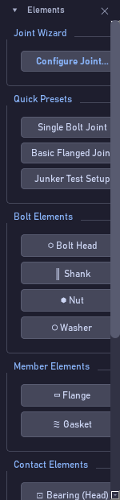
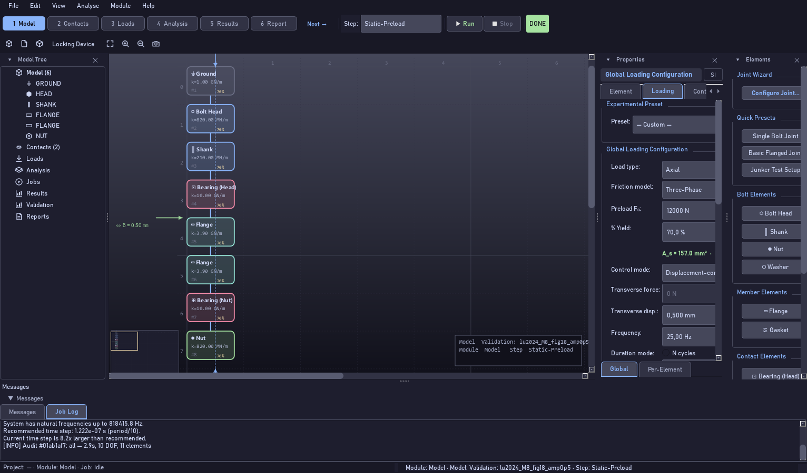
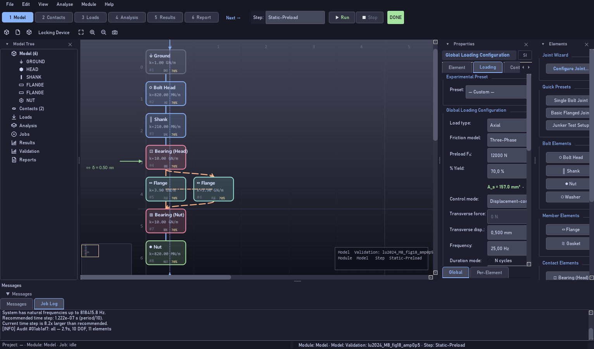
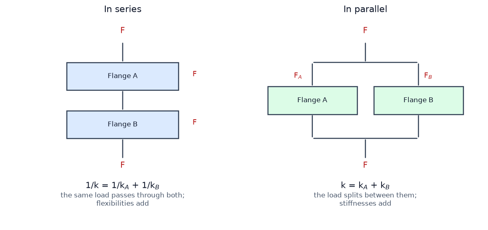
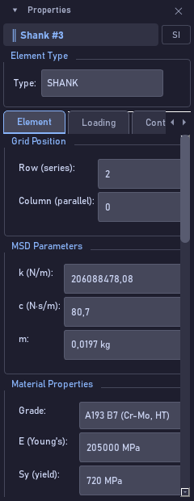

Building your first MSD model
Bolt Analysis Studio 1.0.0 · Narrated user guide
Listen to the narration · voice: en-US-AndrewNeural






Transcript
Let us build a model from scratch. Under File, New analysis, pick the empty model: the viewport goes clean. From the palette on the right, add the elements in the order the load travels. Start with the Ground, the fixed boundary. Then the head, the shank, the bearing connection under the head, the clamped members, the bearing connection under the nut, and the nut. Eight elements are enough for a complete joint. Every element has two coordinates, in the Grid Position group of the Element tab. Row is the position in series. Column is the parallel branch. Elements on different rows are in series, one after another, and the same load passes through all of them; what adds up are the flexibilities, so the inverse of the assembly stiffness is the sum of the inverses. That is why, in a joint, the softest element rules: the gasket, when there is one, dominates. Elements on the same row, in different columns, appear side by side: that is the parallel branch. There the load splits between them and what adds up are the stiffnesses. Two identical plates side by side are twice as stiff as one. Now the honest part, and it matters. Today the column changes the drawing and records your intent, but the engine the paper validated combines the whole chain in series: it does not read the grid. So if you want two members to genuinely share the load in the arithmetic, add their stiffnesses into a single element. The parallel branch in the drawing is there so that you, and whoever reads the model, can see the real topology of the joint. One last rule, and it decides whether the model loosens at all: the two bearing connections, under the head and under the nut, must exist. That is where the face slips, embeds and wears. Without them the curve comes out flat.
Every control on this screen
| Control | What it does |
|---|---|
| File → New analysis… → Empty model | Starts from scratch, with no elements at all. |
| Elements | The palette. Each button adds one element of that type to the viewport. |
| Quick Presets | Shortcut: builds a whole ready-made chain instead of one element at a time. |
| Row (series) | The row. Different rows are positions in series; the load passes through one after another. |
| Column (parallel) | The column. Same row and different columns draw a parallel branch side by side. |
| k (N/m) | The stiffness of each element. In series the inverses add; in parallel the values add. |
| Block in the viewport | Shows the name, the k and the load share. It is the visual check that the chain came out as you intended. |
| Bearing (Head) / Bearing (Nut) | Mandatory. Without both, the model does not loosen. |
| Fit / Shift+F | Frames the whole chain after adding elements. |
Common mistake. Expecting that putting two elements on the same row changes the analysis result. It changes the drawing, not the arithmetic: the validated engine solves the chain in series. For two members to share the load in the calculation, add their stiffnesses into a single element.